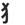

|  | catleft |
|
The left-hand radical is the MUTANT RADICAL for cat- it looks like a cat's paw with claws extended. So you can say: The cat is out playing with flowers in the rice field. |
| ねこ |
cat
1/2 KANA
★★★★★ |
| 子猫 | |
| 招き猫 |
shop-window cat
★★★☆☆
CCW
the little cat in all the shop windows. It's kind of a weird phenomenon if you think about it: One paw is up, beckoning customers to come in, like "Come on in, guy! I like your style!" But the other paw clutches a gold coin, usually marked 10,000,000 yen. Like "OK, J/K about valuing you. I just want your money." |
| 猫舌 |
no hot food for me!
★☆☆☆☆
KUNKUN
someone who doesn't like hot (like oven-hot, not spicy) food. |
| 野良猫 |
stray cat
★☆☆☆☆
FPKANA
|
| Meaning | Hint | Radical | |
|---|---|---|---|
| 猫 | cat | CLAW | |
| 描 | depict | HAND | 手 |
The cat has a CLAW. You draw with your HAND.
 KANJIDAMAGE
KANJIDAMAGE
 Number
1456
Number
1456